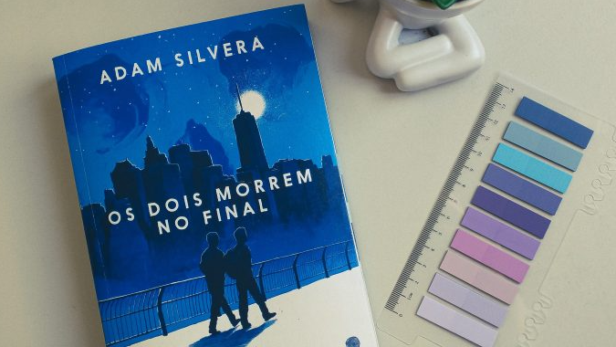
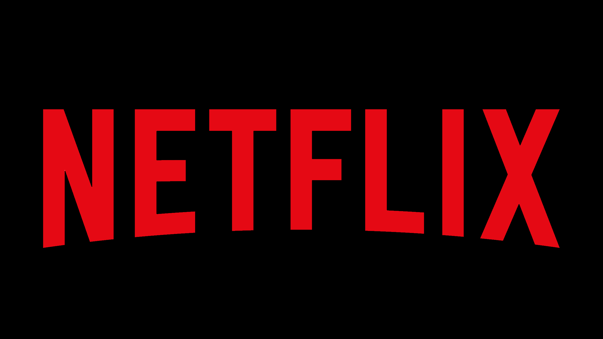

Os Dois Morrem no Final - Adam Silveira
07 de Junho de 2025 11:52 A Central da Morte não ligou para mim, porque eu não vou morrer hoje. Mas e se eu fosse? Será que as pessoas que eu amo sabem o quanto são importantes para mim? Será que eu teria dito tudo que eu precisava dizer? Ou eu passaria meus últimos minutos preso nos arrependimentos, revivendo tudo o que deixei de viver? São essas perguntas que essa trama vai tratar.
Mateo e Rufus, são dois adolescentes que recebem a notícia de que em dentro de 24h os dois vão morrer. E através do aplicativo "Último Amigo", eles se conectam e decidem aproveitar as últimas horas de suas vidas juntos, vivendo experiências e criando memórias até o último minuto.
"As pessoas inventam uns limites de quanto tempo você precisa conhecer alguém antes de ter o direito de dizer isso, mas eu não mentiria para você. Pouco importa quanto tempo ainda nos reste. As pessoas desperdiçam tempo e esperam pelo momento certo, mas nós não temos esse luxo. Se nós tivéssemos a vida inteira pela frente, aposto que você ficaria cansado de me ouvir dizer o quanto eu te amo, porque eu tenho certeza de que esse é o nosso caminho. Mas, como estamos prestes a morrer, quero dizer quantas vezes eu quiser: Te amo, te amo, te amo, te amo."
A relação de Mateo e Rufus é muito espontânea. Eles se conectam de uma maneira tão intensa em tão pouco tempo, que parece que os dois se conhecem há anos. Observar Mateo, inicialmente tímido e receoso, vivendo de verdade, ganhando coragem e autenticidade é inexplicável. É muito emocionante a forma que os garotos ajudam um ao outro a enfrentar seus medos e viver intensamente seus últimos momentos de vida.
Esse livro tem muitas mensagens de grande peso, mas a maior delas é sobre aproveitar a vida! Sabemos que uma hora ou outra vamos partir (a única certeza que temos na vida), mas o que realmente importa não é o nosso fim, mas sim o que fazemos enquanto ainda temos tempo. As pessoas costumam dizer que a vida é feita de escolhas, mas acho que além disso, a vida é feita de momentos - E cada momento pode ser uma nova chance. Uma chance para amar, perdoar, sorrir e ser feliz de verdade, mesmo sabendo que não vamos durar para sempre.
Essa história não é apenas sobre a morte, mas sobre o que significa realmente viver. Porque sabemos que não podemos parar o tempo, mas podemos decidir como vamos preenchê-lo e viver cada dia intensamente, como se fosse o último dia de nossas vidas.
"Eu não posso te dizer como você vai sobreviver sem mim. Eu não posso te dizer como chorar por mim. Não posso convencê-lo a não se sentir culpado se esquecer o aniversário da minha morte, ou se perceber que dias, semanas ou meses se passaram sem pensar em mim. Eu só quero que você viva."
De acordo com o CinePop a Netflix adquiriu os direitos e uma adaptação em série está a caminho! Mas ainda sem nenhuma previsão de estreia.
